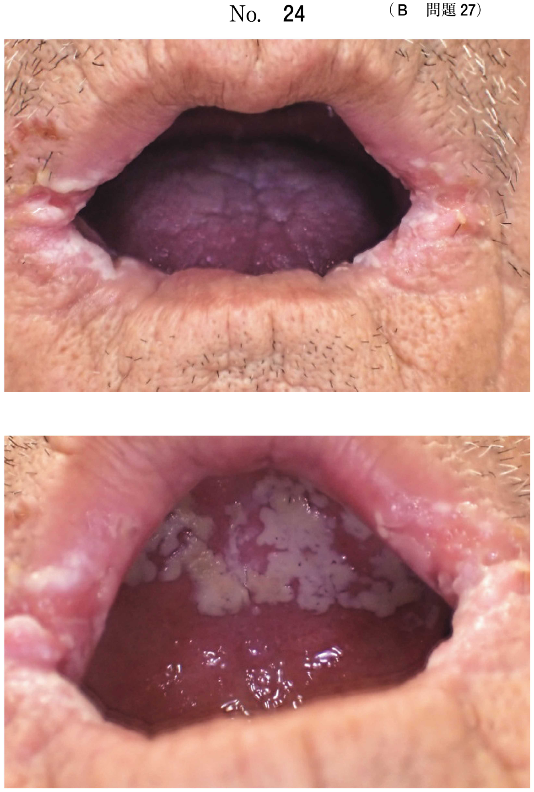
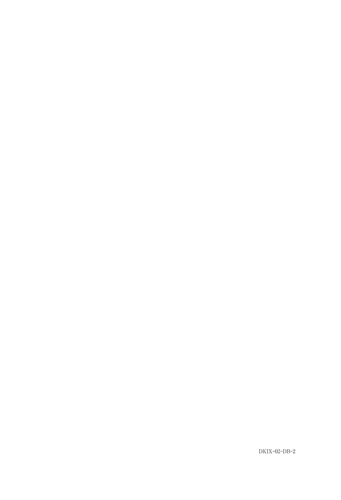

顎変形症の治療
顎変形症の手術一覧
| 分類 | 術式 | 移動方向 | 移動可能量 | 抜歯 | 固定法 |
|---|---|---|---|---|---|
| 上顎骨切り | Le Fort I型骨切り術 | 前後・上下 | 10mm（最大15mm） | なし | プレート固定 |
| 上顎前方歯槽骨切り術（Wassmund-Wunderer法） | 後方 | 小臼歯1歯分 | 小臼歯 | プレート固定 | |
| 下顎骨切り | 下顎枝矢状分割術（SSRO） | 前後・左右非対称改善 | 10mm（最大15mm） | なし | プレート固定＋顎間固定 |
| 下顎枝垂直骨切り術（IVRO） | 後方・左右非対称改善 | 5mm程度 | なし | 固定なし（顎間固定のみ） | |
| 下顎前方歯槽骨切り術（Köle法） | 後方 | 小臼歯1歯分 | 小臼歯 | プレート固定＋顎間固定 | |
| 下顎骨体骨切り術（Dingman法） | 後方 | ― | ― | プレート固定＋顎間固定 |
- Le Fort I型骨切り術 → 上顎全体を移動
- Wassmund-Wunderer法 → 上顎前方歯槽骨切り術（口蓋側からアプローチ）
- Köle法 → 下顎前方歯槽骨切り術
- Dingman法 → 下顎骨体骨切り術
- Obwegeser-Dal Pont法 → 下顎枝矢状分割術（SSRO）
- Kostečka法 → 上顎前方歯槽骨切り術（前方アプローチ）
下顎枝矢状分割術（SSRO）
最も多用される顎矯正手術。下顎枝を矢状方向に分割し、遠位骨片を前後に移動させる。
近位骨片と遠位骨片
- 近位骨片（体幹に近い）：下顎頭のある方。咬筋、側頭筋、外側翼突筋が付着
- 遠位骨片（体幹から遠い）：歯のある方。内側翼突筋、舌骨上筋群が付着
合併症
- 下歯槽神経麻痺（下唇・オトガイ皮膚・歯肉の感覚異常）← 特に損傷しやすい
- 舌神経麻痺
- 顔面神経麻痺
- 顎動脈、顔面動脈、下歯槽動脈からの出血
下顎枝垂直骨切り術（IVRO）
下顎枝を垂直方向に骨切りする。SSROより手技がシンプルで神経損傷リスクが低い。
損傷に注意すべき血管
- 顎動脈：下顎枝内側を走行、骨切り時に損傷リスク
- 顔面動脈：下顎骨下縁付近を走行
Le Fort I型骨切り術
上顎骨全体を骨切りし、前後・上下方向に移動させる術式。
手順
- 口腔前庭水平切開 → 骨膜剥離・鼻粘膜の剥離 → 骨切り（鼻中隔切離を含む）→ Down Fracture → プレートによる固定
合併症
- 出血：顎動脈（後上歯槽動脈、頬動脈）、翼突筋静脈叢、下行口蓋動脈
- 眼窩下神経麻痺（鼻背、鼻翼、鼻下、上唇の感覚異常）
- 鼻涙管の損傷（流涙）
- 視力障害
- 鼻咽腔閉鎖不全（唇顎口蓋裂患者の上顎前方移動時）
※鼻口蓋動脈・鼻口蓋神経はDown Fracture時に切断される。下行口蓋動脈は絶対に切ってはいけない。
過去問
正しい組合せはどれか。1つ選べ。
b 下顎枝垂直骨切り術 ――――― Wassmund法
c 下顎枝水平骨切り術 ――――― Köle法
d 下顎骨体一部切除術 ――――― Dingman法
e 下顎前歯部歯槽骨切り術 ――― Wunderer法
【解説】Dingman法は下顎骨体骨切り術（d）。a：Kostečka法は上顎前方歯槽骨切り術。b：Wassmund法も上顎前方歯槽骨切り術。c：Köle法は下顎前方歯槽骨切り術。e：Wunderer法は上顎前方歯槽骨切り術（口蓋側アプローチ）。
術中の口腔内写真（別冊No.17）を別に示す。行っている手術はどれか。1つ選べ。

b 下顎枝矢状分割術
c 下顎骨嚢胞摘出術
d 下顎枝垂直骨切り術
e 下顎骨骨折観血的整復術
【解説】術中写真で下顎枝の矢状方向の骨切りとスプレッティングオステオトームによる骨分割が確認できる → 下顎枝矢状分割術（SSRO）（b）。
下顎枝矢状分割術の際に起こりうる合併症はどれか。2つ選べ。
b 舌神経麻痺
c 鼻咽腔閉鎖不全
d 下歯槽動脈からの出血
e オトガイ下動脈からの出血
【解説】SSROでは下顎枝内面の骨切り時に舌神経麻痺（b）が起こりうる。また下歯槽動脈は下顎管内を走行し、骨分割時に損傷の可能性がある（d）。a（視力障害）はLe Fort I型骨切り術の合併症。c（鼻咽腔閉鎖不全）もLe Fort I型の合併症。e（オトガイ下動脈）はオトガイ形成術の合併症。
下顎枝垂直骨切り術において、骨切り時の損傷に注意すべきなのはどれか。2つ選べ。
b 舌動脈
c 顔面動脈
d 浅側頭動脈
e 上行咽頭動脈
【解説】下顎枝垂直骨切り術（IVRO）では、下顎枝内側を走行する顎動脈（a）と下顎骨下縁付近の顔面動脈（c）の損傷に注意が必要。b（舌動脈）は舌の深部を走行。d（浅側頭動脈）は耳前部の皮下。
19歳の女性。反対咬合を主訴として来院した。術前矯正治療後に顎矯正手術を行うこととした。術前矯正中の口腔内写真（別冊No.38A）、頭部エックス線規格写真（別冊No.38B）及び手術中の写真（別冊No.38C）を別に示す。行っている手術はどれか。1つ選べ。

b Kostečka法
c Le FortⅠ型骨切り術
d Obwegeser-Dal Pont法
e Wassmund-Wunderer法
【解説】術中写真で上顎の骨切りとDown Fractureの操作が確認できる → Le Fort I型骨切り術（c）。反対咬合に対して上顎を前方移動する目的。a（Köle法）は下顎前方歯槽骨切り術。d（Obwegeser-Dal Pont法）は下顎枝矢状分割術。
17歳の女子。上顎前歯の前突を主訴として来院した。術前矯正治療後に顎矯正手術を行うこととした。手術中の口腔内写真（別冊No.19）を別に示す。この手術法はどれか。1つ選べ。

b Robinson 法
c Wunderer 法
d Le Fort I型骨切り術
e Obwegeser-Dal Pont 法
【解説】上顎前歯の前突に対する手術。術中写真で口蓋側からのアプローチが確認できる → Wunderer法（c）＝上顎前方歯槽骨切り術（口蓋側アプローチ）。上顎前歯部を後方に移動する。d（Le Fort I型骨切り術）は上顎全体を移動する術式で、前歯部のみの移動には用いない。
下顎枝矢状分割術を行う下顎前突症患者の術前3D-CT（別冊No.2A）とCTを用いたシミュレーション像（別冊No.2B）を別に示す。術後に予想されるのはどれか。3つ選べ。

b 咬合平面の改善
c 右側の内外側骨片間の干渉
d 左側の内外側骨片間の空隙
e 下顎枝部後縁からの内側骨片の突出
【解説】SSROで下顎を後方移動する際、3D-CTシミュレーションから術後に予想される所見を問う問題。遠位骨片（歯のある方）を後方に移動させると、骨片の形状によって内外側骨片間の干渉（c）や空隙（d）が生じ、下顎枝部後縁から内側骨片が突出（e）することがある。a（下顔面高の増大）は後方移動では生じない。